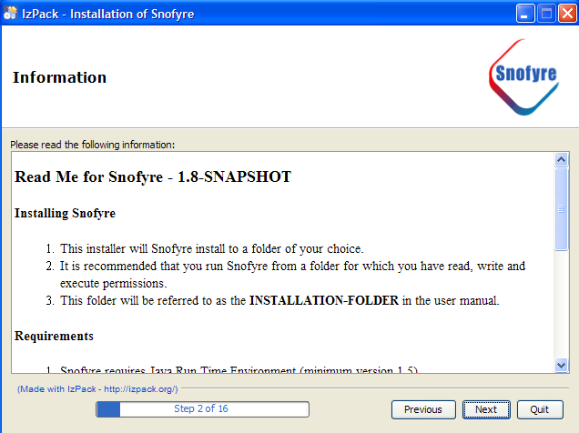
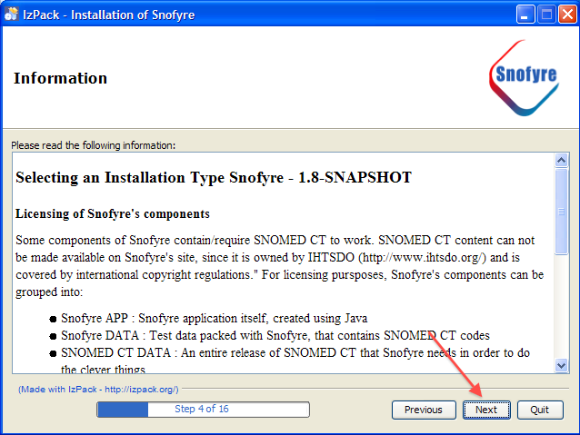
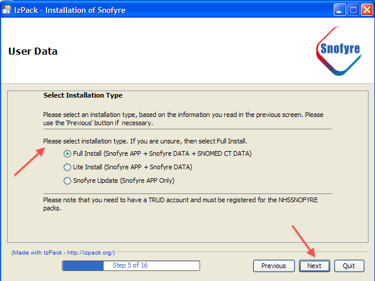
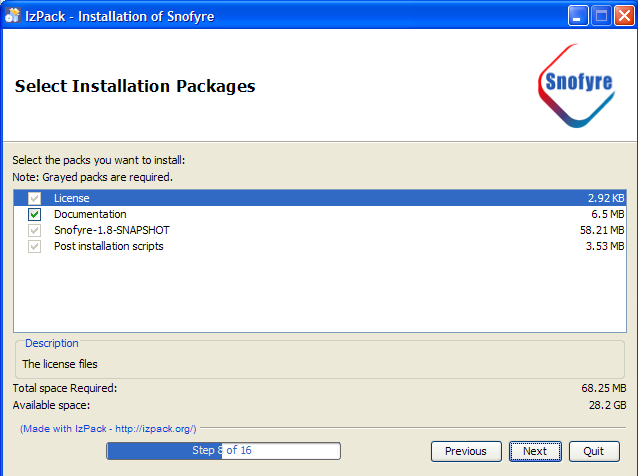
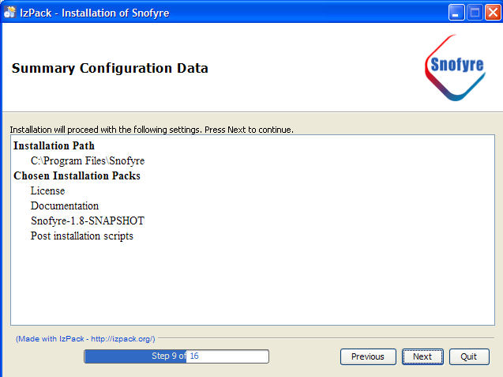
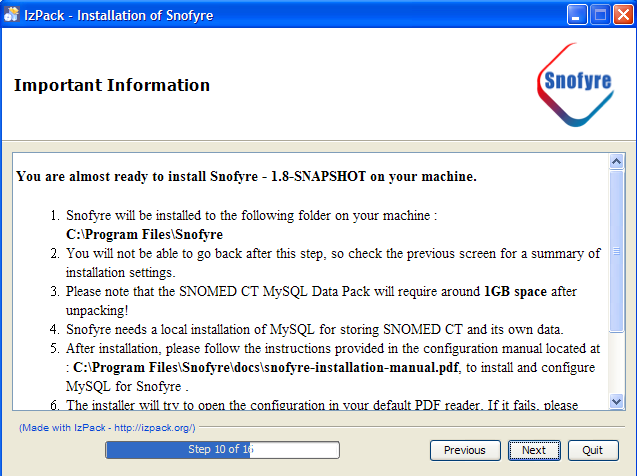
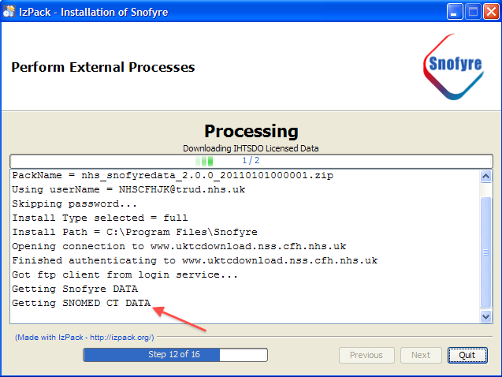

SNOMED CT, Java and MySQL are registered trademarks
This section describes the process of installing Snofyre using the Snofyre-Installer executable that the user downloaded.
-
Once the Installer has been downloaded, it can be launched in any of
the following ways
- On the Windows platform, the installer can be launched by running the Snofyre-Installer.exe file. This is typically done by double clicking the file.
- The installer can also be launched on any platform from the command
line, using the Snofyre-Installer.jar file. This
file is a cross-platform installer and runs on any operating system that has
Java installed. You can launch the cross-platform installer
from the command line using the command:
java -jar Snofyre-Installer.jarImportant: You need to navigate to the folder where the cross-platform installer is located, before you can launch the installer using the above command. Since the command for navigating to the appropriate folder using command line varies with operating system, the exact command is not specified here.Important: Java must be installed on the client machine for this this command to work.

- In the Welcome Panel displayed, click the Next button, to display the next panel
-
The Read Me Panel shown below, describes some basic
information about Snofyre. When you have read this information, click
Next, to display the next panel.

-
The License Panel displays the license agreements for
using Snofyre. Click the Next button to display the
next panel, after a
-
Read the license terms and check the I accept the terms of
the license option as shown below, if you accept the
license.

- Click Next, to display the next panel.
-
Read the license terms and check the I accept the terms of
the license option as shown below, if you accept the
license.
-
The Installation Info Panel describes the licensing restrictions associated with SNOMED CT
data that Snofyre uses. It then describes the different installation types that the user can choose as shown below.
Click the Next button to display the next panel, where you'll be asked to select an
installation type.

Important: Selecting either Full or Lite installations requires the client machine is connected to the internet, because the installer will download appropriate packs from TRUD. -
The Installation Type Panel select an appropriate installtion type, based on information in the
previous panel. After selecting an installation type, click the Next button as shown below.
installation type.

-
If you've selected a Full or Lite installation in the previous step, the installer
now prompts you for your TRUD FTP user name and password as shown below.

- Enter your TRUD ftp user name as shown below
- Enter your TRUD ftp password as shown below
- Click Next, to display the next panel.
If your TRUD ftp credentials are correct, the installer will display the next panel, otherwise it will display the error message shown below.

-
In the Target Path panel, select the location where you
would like Snofyre to be installed.
-
In the Target Path panel, you can go with the
default location specified by the installer. You can change the
location, using the Browse button as shown
below.
If the selected location does not exist, the installer informs you that the target directory will be created, as shown below.

- Click Next, to display the next panel.
-
In the Target Path panel, you can go with the
default location specified by the installer. You can change the
location, using the Browse button as shown
below.
-
The Packs Panel displays the various packs bundled in
installer.
- You can choose to install all the packs offered by the installer as
shown below.

- You can choose to not to install the optional packs offered by the
installer by unchecking the checkbox against a given pack.
Tip: It is not possible to uncheck any of the mandatory packs that are required by Snofyre.
- You can choose to install all the packs offered by the installer as
shown below.
-
The Summary Panel shown below, displays a summary of the
installation information, including the installation target folder and packs
selected.

Please click the Next button, after you have verified information presented by this panel.
Important: You will not be able to go back after you clicked Next on this panel, so please verify the information presented. -
The Important Information Panel displays information on
the configuration of Snofyre, as shown below.

Attention: Please do not click the Next button, without reading this information.Please click the Next button, after you have read the information presented by this panel.
-
The Install Panel starts the installation process and
displays the progress of the installation.
-
The Install Panel displays the progress as each
selected pack is installed, as shown below

-
Verify that the Install Panel has finished
copying files to the Installation Folder, by
verifying the status messages displayed, as shown below.

-
The Install Panel displays the progress as each
selected pack is installed, as shown below
-
If you've selected a Full or Lite installation in the previous step, the
installer displays a Process Panel that connects to TRUD to download
IHTSDO licensed data that Snofyre needs.
-
If you've selected a Lite or Full install, the installer displays a
message about downloading Snofyre Data as shown below.

-
If you've selected a Full install, the installer displays a
message about downloading SNOMED CT Data as shown below.

-
Once the installer completes downloading the necessary data packs, it displays a
Finished downlaoding message as shown below.
 Important: If you have problems with the installer's FTP download feature, select installation type 'Update'. Manually download the NHS_SNOFYREDATA pack from the new TRUD site using your browser. Extract pack contents to the installation folder, using 7zip, WinRar, WinZip or something similar.
Important: If you have problems with the installer's FTP download feature, select installation type 'Update'. Manually download the NHS_SNOFYREDATA pack from the new TRUD site using your browser. Extract pack contents to the installation folder, using 7zip, WinRar, WinZip or something similar. -
As part of this process, the installer opens up and displays the
Snofyre Configuration Manual in the client
machine's default PDF reader, as shown below.
 Attention: Please do not close the Installation manual that is opened up. You have to follow the steps listed in the manual, to complete Snofyre installation.
Attention: Please do not close the Installation manual that is opened up. You have to follow the steps listed in the manual, to complete Snofyre installation.
-
If you've selected a Lite or Full install, the installer displays a
message about downloading Snofyre Data as shown below.
-
Now return to the Snofyre Installation Manual and
navigate to the section on Downloading and Installing MySQL
Server as shown below.
 Important: Please follow all steps described in the Snofyre Installation Manual, before returning to the installer and clicking on the Next Button.
Important: Please follow all steps described in the Snofyre Installation Manual, before returning to the installer and clicking on the Next Button. - When you have completed all steps listed in the Snofyre Installation Manual, click the Next button and follow the instructions described in Confirming Configuration in Installer.